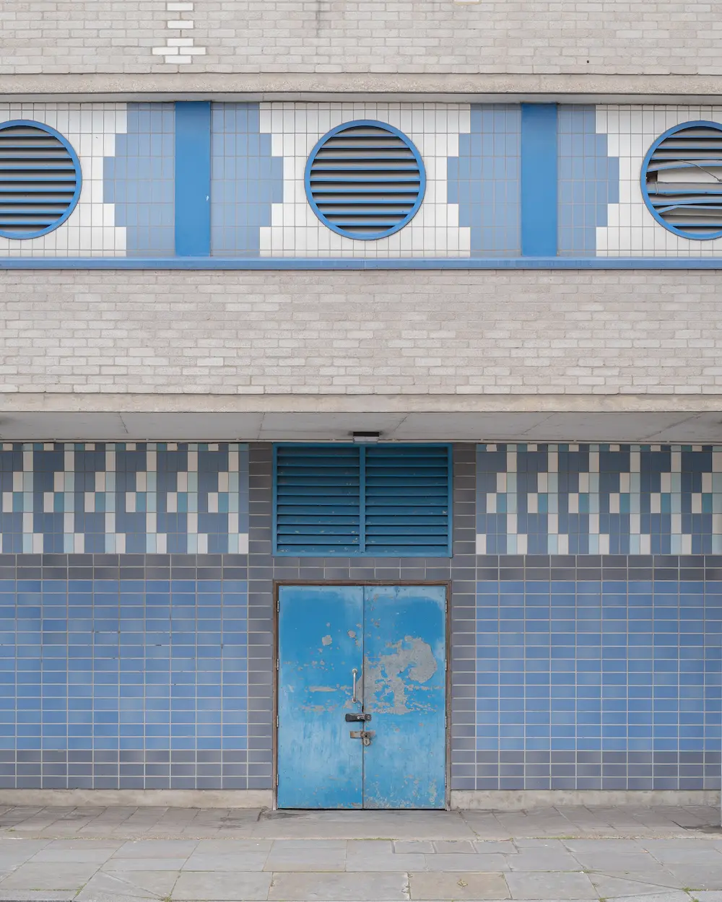

Moss Growth Simulation
Mapping group project / Physical Map / 2021
In this iteration of my physical map I was focused on, and interested in the natural overgrowth of moss and other urban vegetation. Along these old New England brick streets, nature is seemingly exploding through and around the bricks and cracked asphalt everywhere you look.
To better understand this natural process I attempted to simulate it digitally. The process I found to work the best was reminiscent of John Conway’s Game of Life. The main difference in my system is that instead of an endless uniform plane on which the pixels propagate, they live out their generations on any complex image of your choosing. By changing some set parameters you can affect how and where to promote and or inhibit pixel growth.
